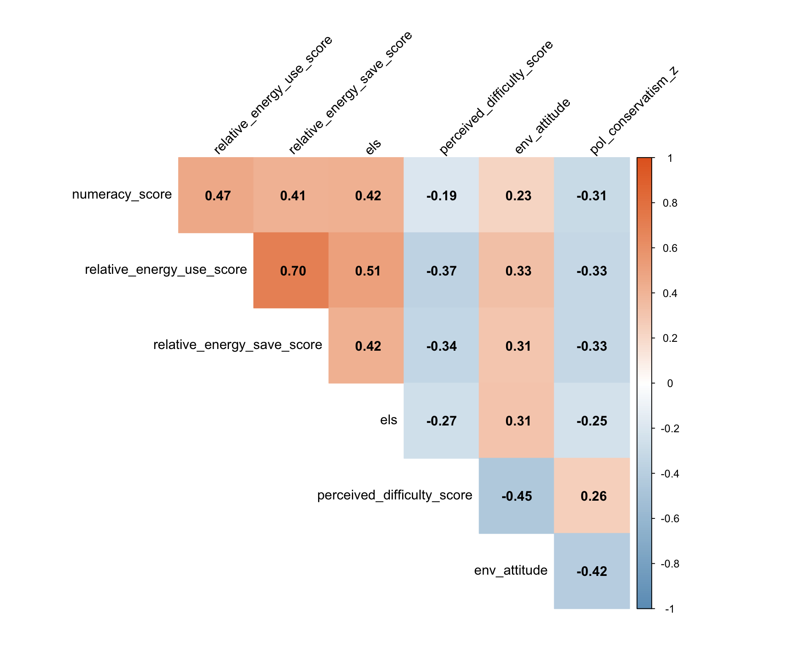
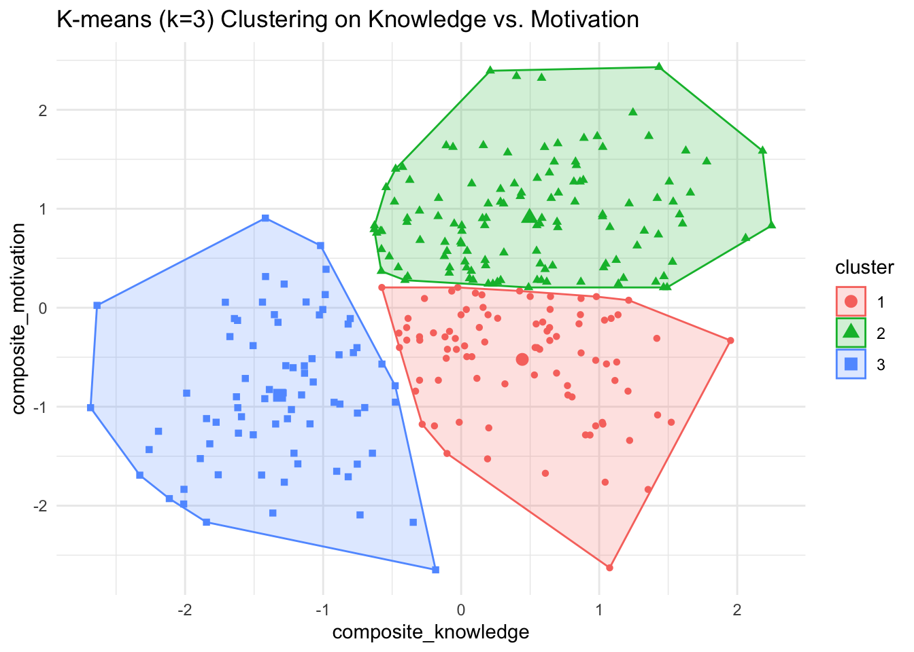
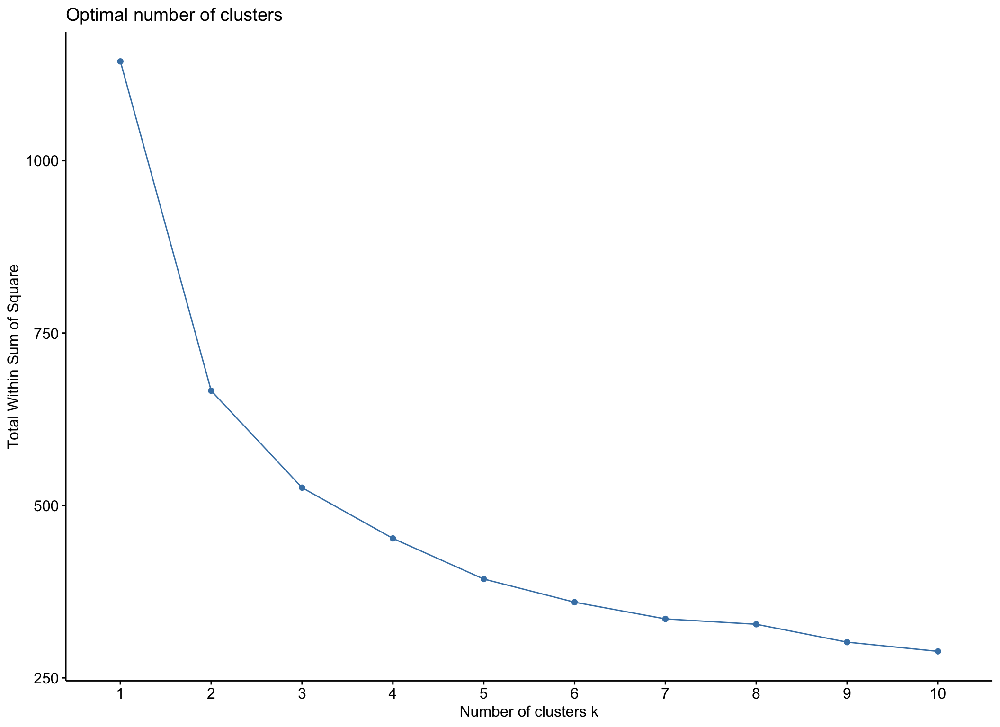

This study set out to assess how prior survey instruments on sustainable behaviors, knowledge, and attitudes correlate.Many studies on environmental behavior measure people’s motivation to show sustainable behavior and classify them as being highly or lowly motivated, and their knowledge about what the right behavior would look like. An example would be recycling.
Read data
Display code
pacman::p_load(dplyr,purrr,tidyr,here, haven,tibble,ggplot2,ggh4x,lme4,knitr,kableExtra,gt,pander,flextable,ggh4x,psych,corrplot,factoextra)options(digits=2, scipen=999, dplyr.summarise.inform=FALSE)library(gridExtra)library(factoextra)library(mgcv)library(lavaan)library(CCA)library(qgraph)library(rpart)library(rpart.plot)library(mclust)library(tidyLPA)select=dplyr::selectsource(here("scripts","survey_functions.R"))draw<-readRDS(here("data","draw.rds"))#dinst <- readRDS(here("data","dinst.rds"))# Attari Energy Survey (Part 1)aes1<-draw|>select(id,ATT01:ATT18)#aes2 <- dinst |> select(id,ATT01:ATT18)aes_combined<-bind_rows(aes1)att_useSave<-draw|>select(id,ATT19:ATT33)#att_useSave2 <- dinst |> select(id,ATT19:ATT33)att2_combined<-bind_rows(att_useSave)els1<-draw|>select(id,ELS01:ELS08)#els2 <- dinst |> select(id,ELS01:ELS08)els<-bind_rows(els1)rs1<-draw|>select(id,RS01:RS06)#rs2 <- dinst |> select(id,RS01:RS06)rs<-bind_rows(rs1)attari1<-analyze_attari_survey_part1(aes_combined)attari2_scores<-analyze_attari_survey(att2_combined)els_scores<-analyze_els_survey(els)rs_scores<-analyze_recycling_survey(rs)# Combine all scores into one dataframecombined_scores<-attari1%>%left_join(attari2_scores, by="id")%>%left_join(els_scores, by="id")%>%left_join(rs_scores, by="id")# Rename columns for claritynames(combined_scores)<-c("id", "perceived_difficulty", "numeracy", "energy_use", "energy_save", "els_accuracy", "els_score","env_attitude", "env_attitude_z","pol_conservatism", "pol_conservatism_z")
# 1. Cluster Analysis# Prepare data for clustering (select relevant variables and scale)cluster_data<-combined_scores%>%select(perceived_difficulty, numeracy, energy_use, energy_save, els_score, env_attitude_z, pol_conservatism_z)%>%na.omit()%>%scale()# Determine optimal number of clusters using the elbow methodfviz_nbclust(cluster_data, kmeans, method ="wss")+labs(title ="Elbow Method for Optimal k", x ="Number of Clusters k")
::: {.cell-output-display} ::: :::
Display code
# Perform k-means clustering (e.g., with 3 clusters)set.seed(123)km_result<-kmeans(cluster_data, centers =3, nstart =25)# Visualize the clustersfviz_cluster(km_result, data =cluster_data, geom ="point", ellipse.type ="convex", ggtheme =theme_bw())+labs(title ="K-means Clustering of Subjects")
Display code
# Add cluster assignments to the main dataframecombined_scores$cluster<-as.factor(km_result$cluster)# 2. Enhanced Factor Analysis# Scree plot to determine the number of factorsfa_data<-combined_scores%>%select(perceived_difficulty, numeracy, energy_use, energy_save, els_score, env_attitude_z, pol_conservatism_z)%>%na.omit()scree(fa_data)
Factor Analysis using method = minres
Call: fa(r = fa_data, nfactors = 2, rotate = "varimax")
Standardized loadings (pattern matrix) based upon correlation matrix
item MR1 MR2 h2 u2 com
energy_use 3 0.84 0.76 0.244 1.1
energy_save 4 0.73 0.59 0.414 1.2
els_score 5 0.56 0.37 0.634 1.3
numeracy 2 0.55 0.33 0.671 1.2
env_attitude_z 6 0.99 1.00 0.004 1.0
perceived_difficulty 1 -0.31 -0.41 0.27 0.733 1.9
pol_conservatism_z 7 -0.33 -0.37 0.25 0.752 2.0
MR1 MR2
SS loadings 2.08 1.47
Proportion Var 0.30 0.21
Cumulative Var 0.30 0.51
Proportion Explained 0.59 0.41
Cumulative Proportion 0.59 1.00
Mean item complexity = 1.4
Test of the hypothesis that 2 factors are sufficient.
df null model = 21 with the objective function = 2 with Chi Square = 581
df of the model are 8 and the objective function was 0.06
The root mean square of the residuals (RMSR) is 0.03
The df corrected root mean square of the residuals is 0.05
The harmonic n.obs is 287 with the empirical chi square 11 with prob < 0.21
The total n.obs was 287 with Likelihood Chi Square = 16 with prob < 0.039
Tucker Lewis Index of factoring reliability = 0.96
RMSEA index = 0.06 and the 90 % confidence intervals are 0.013 0.1
BIC = -29
Fit based upon off diagonal values = 0.99
Measures of factor score adequacy
MR1 MR2
Correlation of (regression) scores with factors 0.91 1.00
Multiple R square of scores with factors 0.83 0.99
Minimum correlation of possible factor scores 0.66 0.99
Display code
# 3. Enhanced Regression Models# Model predicting ELS from motivation, controlling for other knowledge scoresmodel_els_enhanced<-lm(els_score~perceived_difficulty+env_attitude_z+pol_conservatism_z+numeracy+energy_use+energy_save, data =combined_scores)summary(model_els_enhanced)
# 4. Interaction Effects in Regression# Example: Interaction between environmental attitude and perceived difficulty on ELSmodel_interaction<-lm(els_score~perceived_difficulty*env_attitude_z, data =combined_scores)summary(model_interaction)
Call:
lm(formula = els_score ~ perceived_difficulty * env_attitude_z,
data = combined_scores)
Residuals:
Min 1Q Median 3Q Max
-2.4443 -0.6460 0.0125 0.6944 2.1713
Coefficients:
Estimate Std. Error t value Pr(>|t|)
(Intercept) -0.0457 0.0613 -0.75 0.45624
perceived_difficulty -0.1680 0.0624 -2.69 0.00749 **
env_attitude_z 0.2286 0.0626 3.65 0.00031 ***
perceived_difficulty:env_attitude_z -0.1017 0.0581 -1.75 0.08091 .
---
Signif. codes: 0 '***' 0.001 '**' 0.01 '*' 0.05 '.' 0.1 ' ' 1
Residual standard error: 0.94 on 283 degrees of freedom
Multiple R-squared: 0.128, Adjusted R-squared: 0.119
F-statistic: 13.8 on 3 and 283 DF, p-value: 0.0000000196
Display code
# Visualize the interaction (example)ggplot(combined_scores, aes(x =perceived_difficulty, y =els_score, color =env_attitude_z))+geom_point()+geom_smooth(method ="lm", se =FALSE)+scale_color_gradient(low ="blue", high ="red")+labs(title ="Interaction of Perceived Difficulty and Environmental Attitude on ELS", x ="Perceived Difficulty", y ="Energy Literacy Score")+theme_minimal()
2a
Display code
combined_df<-attari1%>%full_join(attari2_scores, by ="id")%>%full_join(els_scores, by ="id")%>%full_join(rs_scores, by ="id")# 1. Create knowledge profiles using cluster analysisknowledge_vars<-combined_df%>%select(numeracy_score, relative_energy_use_score, relative_energy_save_score, els)set.seed(123)clusters<-kmeans(scale(knowledge_vars), centers=3)# Add cluster membership to datacombined_df$knowledge_cluster<-as.factor(clusters$cluster)# Compare motivation scores across clusterscluster_comparison<-combined_df%>%group_by(knowledge_cluster)%>%summarise( mean_env_attitude =mean(env_attitude, na.rm=TRUE), mean_difficulty =mean(perceived_difficulty_score, na.rm=TRUE))# 2. Test for non-linear relationshipsgam_model<-gam(els~s(env_attitude)+s(perceived_difficulty_score), data=combined_df)# 3. Create interaction model between knowledge and motivationinteraction_model<-lm(els~env_attitude*perceived_difficulty_score+numeracy_score, data=combined_df)# 1. Enhanced Correlation Plotcor_matrix<-combined_df%>%select(numeracy_score, relative_energy_use_score, relative_energy_save_score, els, perceived_difficulty_score, env_attitude, pol_conservatism_z)%>%cor(use ="pairwise.complete.obs")corrplot(cor_matrix, method ="color", type ="upper", addCoef.col ="black", tl.col ="black", tl.srt =45, diag =FALSE, col =colorRampPalette(c("#6D9EC1", "white", "#E46726"))(200))

Display code
# 2. Knowledge Profile Clustering# Standardize knowledge variablesknowledge_vars<-combined_df%>%select(numeracy_score, relative_energy_use_score, relative_energy_save_score, els)%>%scale()# Determine optimal number of clustersset.seed(123)wss<-sapply(1:10, function(k){kmeans(knowledge_vars, centers=k)$tot.withinss})# Perform k-means clusteringk<-3# Based on elbow plot inspectionclusters<-kmeans(knowledge_vars, centers=k)# Add cluster membership to datacombined_df$knowledge_cluster<-as.factor(clusters$cluster)# Visualize clusterspca_result<-prcomp(knowledge_vars)cluster_df<-data.frame( PC1 =pca_result$x[,1], PC2 =pca_result$x[,2], Cluster =combined_df$knowledge_cluster)# Create cluster visualizationp_clusters<-ggplot(cluster_df, aes(x=PC1, y=PC2, color=Cluster))+geom_point(alpha=0.6)+theme_minimal()+labs(title="Knowledge Profiles Clustering", x="First Principal Component", y="Second Principal Component")p_clusters
# Example: K-means clustering on knowledge + motivation# Subset your knowledge & motivation columnscluster_data<-combined_df%>%select(numeracy_score, relative_energy_use_score, relative_energy_save_score,els, perceived_difficulty_score, env_attitude, pol_conservatism)%>%na.omit()# Scale themcluster_data_scaled<-scale(cluster_data)# Decide on number of clusters (e.g. 2–5) – use e.g. Elbow methodfviz_nbclust(cluster_data_scaled, kmeans, method ="wss")
Display code
# Suppose we choose 3 clusters as a demonstrationset.seed(123)km_result<-kmeans(cluster_data_scaled, centers =3, nstart =25)# Add cluster membership back into the original datacluster_data$cluster<-factor(km_result$cluster)# Visualize clusters in 2D (using PCA behind the scenes)fviz_cluster(km_result, data =cluster_data_scaled, geom ="point", ellipse.type ="convex")+theme_minimal()+labs(title ="K-means Clusters of Knowledge & Motivation Variables")
Display code
# 1. Grab relevant variablescluster_data<-combined_df%>%select(numeracy_score, relative_energy_use_score, relative_energy_save_score,els, perceived_difficulty_score, env_attitude, pol_conservatism)%>%na.omit()# 2. Standardize/scale themcluster_data_scaled<-scale(cluster_data)# 3. Determine the optimal number of clusters (Elbow or Silhouette methods)fviz_nbclust(cluster_data_scaled, kmeans, method ="wss")+theme_minimal()
Display code
# 4. Run k-means with your chosen number of clusters (say k = 3)set.seed(123)km_res<-kmeans(cluster_data_scaled, centers =3, nstart =25)# 5. Visualizefviz_cluster(km_res, data =cluster_data_scaled, geom ="point", ellipse.type ="convex")+theme_minimal()+labs(title ="K-means Clusters of Knowledge & Motivation Variables")
# Example of hierarchical clustering if that is preferreddist_mat<-dist(cluster_data_scaled, method ="euclidean")hc_res<-hclust(dist_mat, method ="ward.D2")plot(hc_res, main ="Dendrogram of Hierarchical Clustering")
Display code
# Cut tree at chosen kclusters<-cutree(hc_res, k =3)table(clusters)
clusters
1 2 3
109 120 58
Display code
# Example mediation: knowledge -> perceived_difficulty -> env_attitudemodel_mediation<-' # direct effect env_attitude ~ c*els # mediator perceived_difficulty_score ~ a*els env_attitude ~ b*perceived_difficulty_score # indirect effect ab := a*b # total effect total := c + (a*b)'fit_mediation<-sem(model_mediation, data =combined_df, missing="fiml")summary(fit_mediation, fit.measures=TRUE, standardized=TRUE, rsquare=TRUE)
lavaan 0.6-19 ended normally after 1 iteration
Estimator ML
Optimization method NLMINB
Number of model parameters 7
Number of observations 287
Number of missing patterns 1
Model Test User Model:
Test statistic 0.000
Degrees of freedom 0
Model Test Baseline Model:
Test statistic 101.384
Degrees of freedom 3
P-value 0.000
User Model versus Baseline Model:
Comparative Fit Index (CFI) 1.000
Tucker-Lewis Index (TLI) 1.000
Robust Comparative Fit Index (CFI) 1.000
Robust Tucker-Lewis Index (TLI) 1.000
Loglikelihood and Information Criteria:
Loglikelihood user model (H0) -684.945
Loglikelihood unrestricted model (H1) -684.945
Akaike (AIC) 1383.891
Bayesian (BIC) 1409.507
Sample-size adjusted Bayesian (SABIC) 1387.309
Root Mean Square Error of Approximation:
RMSEA 0.000
90 Percent confidence interval - lower 0.000
90 Percent confidence interval - upper 0.000
P-value H_0: RMSEA <= 0.050 NA
P-value H_0: RMSEA >= 0.080 NA
Robust RMSEA 0.000
90 Percent confidence interval - lower 0.000
90 Percent confidence interval - upper 0.000
P-value H_0: Robust RMSEA <= 0.050 NA
P-value H_0: Robust RMSEA >= 0.080 NA
Standardized Root Mean Square Residual:
SRMR 0.000
Parameter Estimates:
Standard errors Standard
Information Observed
Observed information based on Hessian
Regressions:
Estimate Std.Err z-value P(>|z|) Std.lv
env_attitude ~
els (c) 0.158 0.041 3.880 0.000 0.158
perceived_difficulty_score ~
els (a) -0.268 0.057 -4.721 0.000 -0.268
env_attitude ~
prcvd_dff_ (b) -0.302 0.041 -7.417 0.000 -0.302
Std.all
0.207
-0.268
-0.395
Intercepts:
Estimate Std.Err z-value P(>|z|) Std.lv Std.all
.env_attitude 3.591 0.039 91.857 0.000 3.591 4.717
.prcvd_dffclty_ 0.000 0.057 0.000 1.000 0.000 0.000
Variances:
Estimate Std.Err z-value P(>|z|) Std.lv Std.all
.env_attitude 0.439 0.037 11.979 0.000 0.439 0.757
.prcvd_dffclty_ 0.925 0.077 11.979 0.000 0.925 0.928
R-Square:
Estimate
env_attitude 0.243
prcvd_dffclty_ 0.072
Defined Parameters:
Estimate Std.Err z-value P(>|z|) Std.lv Std.all
ab 0.081 0.020 3.982 0.000 0.081 0.106
total 0.239 0.043 5.583 0.000 0.239 0.313
4a
Display code
combined_scores<-combined_df%>%mutate(# Example composite for knowledge: average of (z-scored) numeracy, # energy_use, energy_save, ELS. # (You can also sum them, but average is convenient.) composite_knowledge =rowMeans(cbind(numeracy_score, relative_energy_use_score, relative_energy_save_score, els), na.rm =FALSE# If a row has missing for any item, result = NA),# Example composite for motivation: # env_attitude might be already in a favorable direction, but if # perceived_difficulty is "difficulty," consider reversing so that # higher = "less difficulty" = "higher motivation."# For example: reverse_diff = (-1)*perceived_difficulty_score# Then average with env_attitude (if you want them combined).# If you are including pol_conservatism as well, you must decide # how to handle that in the composite. Possibly reverse-coded # so that higher # = more liberal or more "pro-environment" stance. # (It's your theoretical call.)# For now, let's do a small composite with environmental attitude # and reversed difficulty: reverse_diff =-1*perceived_difficulty_score, composite_motivation =rowMeans(cbind(env_attitude, reverse_diff), na.rm =FALSE))# We'll create a small data frame with just the two composites, # removing any incomplete casescluster_data<-combined_scores%>%select(composite_knowledge, composite_motivation)%>%na.omit()# Decide on number of clusters "k". Let’s try k = 3:set.seed(123)km3<-kmeans(cluster_data, centers =3, nstart =25)# Inspect resultskm3
# Visualizefviz_cluster(km3, data =cluster_data, geom ="point", ellipse.type ="convex")+theme_minimal()+labs(title ="K-means (k=3) Clustering on Knowledge vs. Motivation")

Display code
combined_scores$cluster<-factor(km3$cluster)# Compare mean knowledge & motivation by clustercombined_scores%>%group_by(cluster)%>%summarize( n =n(), mean_knowledge =mean(composite_knowledge, na.rm =TRUE), mean_motivation =mean(composite_motivation, na.rm =TRUE))
# 2. Canonical Correlation Analysis between Knowledge and Motivation Sets# Prepare matricesknowledge_vars<-combined_scores%>%select(numeracy, energy_use, energy_save, els_score)%>%as.matrix()motivation_vars<-combined_scores%>%select(env_attitude, perceived_difficulty, pol_conservatism)%>%as.matrix()# Perform CCAcc_result<-cancor(knowledge_vars, motivation_vars)# 3. Network Analysis to Visualize Variable Relationships# Create correlation matrixcor_matrix<-cor(combined_scores%>%select(numeracy, energy_use, energy_save, els_score,env_attitude, perceived_difficulty, pol_conservatism), use ="pairwise.complete.obs")# Create network plotqgraph(cor_matrix, layout ="spring", groups =list(Knowledge =1:4, Motivation =5:7), color =c(rep("lightblue", 4), rep("lightgreen", 3)))
Display code
# 4. Mixed Effects Model to Account for Potential Group-Level Effectsmixed_model<-lmer(els_score~env_attitude+perceived_difficulty+(1|cluster), data =combined_scores)summary(mixed_model)
Linear mixed model fit by REML ['lmerMod']
Formula: els_score ~ env_attitude + perceived_difficulty + (1 | cluster)
Data: combined_scores
REML criterion at convergence: 715
Scaled residuals:
Min 1Q Median 3Q Max
-3.1569 -0.6181 0.0618 0.7882 1.9642
Random effects:
Groups Name Variance Std.Dev.
cluster (Intercept) 0.551 0.742
Residual 0.665 0.816
Number of obs: 287, groups: cluster, 3
Fixed effects:
Estimate Std. Error t value
(Intercept) -0.4586 0.5199 -0.88
env_attitude 0.0966 0.0826 1.17
perceived_difficulty 0.0466 0.0581 0.80
Correlation of Fixed Effects:
(Intr) env_tt
env_attitud -0.558
prcvd_dffcl -0.166 0.278
Display code
# 5. Structural Equation Model for Path Analysis# Define modelmodel<-' # Measurement model knowledge =~ numeracy + energy_use + energy_save + els_score motivation =~ env_attitude + perceived_difficulty + pol_conservatism # Structural model knowledge ~ motivation'# Fit modelfit<-sem(model, data =combined_scores)summary(fit, standardized =TRUE, fit.measures =TRUE)
lavaan 0.6-19 ended normally after 34 iterations
Estimator ML
Optimization method NLMINB
Number of model parameters 15
Number of observations 287
Model Test User Model:
Test statistic 28.421
Degrees of freedom 13
P-value (Chi-square) 0.008
Model Test Baseline Model:
Test statistic 589.268
Degrees of freedom 21
P-value 0.000
User Model versus Baseline Model:
Comparative Fit Index (CFI) 0.973
Tucker-Lewis Index (TLI) 0.956
Loglikelihood and Information Criteria:
Loglikelihood user model (H0) -2593.839
Loglikelihood unrestricted model (H1) -2579.629
Akaike (AIC) 5217.679
Bayesian (BIC) 5272.571
Sample-size adjusted Bayesian (SABIC) 5225.004
Root Mean Square Error of Approximation:
RMSEA 0.064
90 Percent confidence interval - lower 0.032
90 Percent confidence interval - upper 0.097
P-value H_0: RMSEA <= 0.050 0.208
P-value H_0: RMSEA >= 0.080 0.231
Standardized Root Mean Square Residual:
SRMR 0.041
Parameter Estimates:
Standard errors Standard
Information Expected
Information saturated (h1) model Structured
Latent Variables:
Estimate Std.Err z-value P(>|z|) Std.lv Std.all
knowledge =~
numeracy 1.000 0.549 0.550
energy_use 1.593 0.173 9.204 0.000 0.874 0.875
energy_save 1.429 0.159 8.965 0.000 0.784 0.785
els_score 1.080 0.142 7.624 0.000 0.592 0.593
motivation =~
env_attitude 1.000 0.537 0.705
percvd_dffclty -1.123 0.155 -7.233 0.000 -0.603 -0.604
pol_conservtsm -1.487 0.216 -6.892 0.000 -0.798 -0.555
Regressions:
Estimate Std.Err z-value P(>|z|) Std.lv Std.all
knowledge ~
motivation 0.654 0.111 5.910 0.000 0.640 0.640
Variances:
Estimate Std.Err z-value P(>|z|) Std.lv Std.all
.numeracy 0.696 0.063 11.110 0.000 0.696 0.698
.energy_use 0.233 0.045 5.191 0.000 0.233 0.234
.energy_save 0.382 0.047 8.211 0.000 0.382 0.384
.els_score 0.646 0.059 10.874 0.000 0.646 0.648
.env_attitude 0.291 0.041 7.054 0.000 0.291 0.502
.percvd_dffclty 0.633 0.070 9.104 0.000 0.633 0.635
.pol_conservtsm 1.434 0.146 9.788 0.000 1.434 0.692
.knowledge 0.178 0.042 4.275 0.000 0.590 0.590
motivation 0.288 0.053 5.390 0.000 1.000 1.000
Display code
# 6. Classification Tree for Predicting Knowledge Levels - rpart functions# Create binary knowledge indicator (high/low) based on median splitcombined_scores$knowledge_level<-factor(ifelse(combined_scores$composite_knowledge>median(combined_scores$composite_knowledge, na.rm =TRUE),"High", "Low"))# Fit treetree_model<-rpart(knowledge_level~env_attitude+perceived_difficulty+pol_conservatism, data =combined_scores)# Plot treerpart.plot(tree_model, extra =1)
----------------------------------------------------
Gaussian finite mixture model fitted by EM algorithm
----------------------------------------------------
Mclust VEE (ellipsoidal, equal shape and orientation) model with 3 components:
log-likelihood n df BIC ICL
-2450 287 53 -5201 -5231
Clustering table:
1 2 3
129 66 92
lavaan 0.6-19 ended normally after 34 iterations
Estimator ML
Optimization method NLMINB
Number of model parameters 14
Number of observations 287
Model Test User Model:
Test statistic 13.301
Degrees of freedom 7
P-value (Chi-square) 0.065
Model Test Baseline Model:
Test statistic 509.961
Degrees of freedom 15
P-value 0.000
User Model versus Baseline Model:
Comparative Fit Index (CFI) 0.987
Tucker-Lewis Index (TLI) 0.973
Loglikelihood and Information Criteria:
Loglikelihood user model (H0) -2380.829
Loglikelihood unrestricted model (H1) -2374.178
Akaike (AIC) 4789.657
Bayesian (BIC) 4840.890
Sample-size adjusted Bayesian (SABIC) 4796.495
Root Mean Square Error of Approximation:
RMSEA 0.056
90 Percent confidence interval - lower 0.000
90 Percent confidence interval - upper 0.101
P-value H_0: RMSEA <= 0.050 0.360
P-value H_0: RMSEA >= 0.080 0.219
Standardized Root Mean Square Residual:
SRMR 0.029
Parameter Estimates:
Standard errors Standard
Information Expected
Information saturated (h1) model Structured
Latent Variables:
Estimate Std.Err z-value P(>|z|)
knowledge =~
numeracy 1.000
energy_use 1.652 0.191 8.666 0.000
energy_save 1.420 0.160 8.863 0.000
els_accuracy 2.186 0.313 6.987 0.000
motivation =~
env_attitude_z 1.000
percvd_dffclty -1.047 0.171 -6.134 0.000
Regressions:
Estimate Std.Err z-value P(>|z|)
knowledge ~
motivation 0.500 0.095 5.285 0.000
Covariances:
Estimate Std.Err z-value P(>|z|)
.energy_use ~~
.els_accuracy -0.068 0.092 -0.738 0.460
Variances:
Estimate Std.Err z-value P(>|z|)
.numeracy 0.704 0.063 11.128 0.000
.energy_use 0.198 0.058 3.397 0.001
.energy_save 0.406 0.053 7.684 0.000
.els_accuracy 2.315 0.254 9.107 0.000
.env_attitude_z 0.567 0.081 7.022 0.000
.percvd_dffclty 0.526 0.084 6.259 0.000
.knowledge 0.185 0.043 4.262 0.000
motivation 0.429 0.095 4.536 0.000
Display code
# 4. Validate clusters with outcomescombined_scores%>%group_by(cluster)%>%summarise(recycling_rate =mean(env_attitude_z, na.rm=TRUE), energy_behavior =mean(energy_save, na.rm=TRUE))%>%pivot_longer(-cluster, names_to="outcome")%>%ggplot(aes(x=cluster, y=value, fill=outcome))+geom_col(position="dodge")+labs(title="Cluster Validation Through Behavioral Outcomes")
2b
Display code
# Combine all items into a single dataframeall_items<-full_join(aes_combined, att2_combined, by ="id")%>%full_join(els, by ="id")%>%full_join(rs, by ="id")# Select only item columns for factor analysisitem_columns<-setdiff(names(all_items), "id")item_data<-all_items[, item_columns]# Perform factor analysisfa_items<-fa(item_data, nfactors =5, rotate ="varimax")# Adjust nfactors as neededprint(fa_items, cut =0.3, sort =TRUE)
Factor Analysis using method = minres
Call: fa(r = item_data, nfactors = 5, rotate = "varimax")
Standardized loadings (pattern matrix) based upon correlation matrix
item MR1 MR2 MR3 MR5 MR4 h2 u2 com
ATT25 25 0.94 0.903 0.097 1.0
ATT23 23 0.89 0.854 0.146 1.1
ATT26 26 0.89 0.811 0.189 1.1
ATT27 27 0.89 0.802 0.198 1.0
ATT24 24 0.81 0.758 0.242 1.3
ATT33 33 0.70 0.624 0.376 1.6
ATT32 32 0.61 0.423 0.577 1.3
ATT30 30 0.54 0.36 0.561 0.439 2.9
ATT31 31 0.40 0.238 0.762 2.0
ATT10 10 0.68 0.537 0.463 1.4
ATT15 15 0.66 -0.37 0.593 0.407 1.7
ATT14 14 0.65 -0.39 0.611 0.389 1.8
ATT09 9 0.64 0.507 0.493 1.5
ATT06 6 0.64 0.460 0.540 1.3
ATT13 13 0.60 0.365 0.635 1.0
ATT07 7 0.58 0.377 0.623 1.3
ATT03 3 0.57 0.420 0.580 1.6
ATT04 4 0.52 0.320 0.680 1.4
ATT08 8 0.52 0.284 0.716 1.1
ATT12 12 0.50 0.290 0.710 1.4
ATT05 5 0.49 0.313 0.687 1.6
ATT01 1 0.45 0.265 0.735 1.6
RS01 42 -0.42 0.32 0.321 0.679 2.4
ATT02 2 0.35 0.190 0.810 2.1
RS02 43 0.092 0.908 1.2
ATT11 11 0.098 0.902 1.7
RS03 44 -0.40 0.61 0.596 0.404 2.2
ATT17 17 -0.47 0.290 0.710 1.6
RS06 47 0.45 0.229 0.771 1.3
RS04 45 0.43 0.309 0.691 2.3
RS05 46 0.41 0.249 0.751 1.9
ATT18 18 -0.40 0.279 0.721 2.5
ELS02 35 0.40 0.178 0.822 1.2
ELS03 36 0.39 0.176 0.824 1.3
ELS07 40 0.34 0.133 0.867 1.3
ELS04 37 0.32 0.107 0.893 1.0
ELS05 38 0.084 0.916 1.3
ELS01 34 0.116 0.884 2.7
ATT19 19 0.040 0.960 1.2
ELS08 41 0.070 0.930 3.6
ATT20 20 0.93 0.917 0.083 1.1
ATT21 21 0.33 0.80 0.757 0.243 1.3
ATT22 22 0.75 0.618 0.382 1.2
ATT28 28 0.88 0.787 0.213 1.0
ATT29 29 0.86 0.751 0.249 1.0
ATT16 16 0.068 0.932 1.2
ELS06 39 0.035 0.965 3.2
MR1 MR2 MR3 MR5 MR4
SS loadings 5.73 5.41 2.97 2.71 1.99
Proportion Var 0.12 0.12 0.06 0.06 0.04
Cumulative Var 0.12 0.24 0.30 0.36 0.40
Proportion Explained 0.30 0.29 0.16 0.14 0.11
Cumulative Proportion 0.30 0.59 0.75 0.89 1.00
Mean item complexity = 1.6
Test of the hypothesis that 5 factors are sufficient.
df null model = 1081 with the objective function = 31 with Chi Square = 8297
df of the model are 856 and the objective function was 11
The root mean square of the residuals (RMSR) is 0.06
The df corrected root mean square of the residuals is 0.07
The harmonic n.obs is 287 with the empirical chi square 2111 with prob < 0.000000000000000000000000000000000000000000000000000000000000000000000000000000000000000000000000000000000024
The total n.obs was 287 with Likelihood Chi Square = 3032 with prob < 0.0000000000000000000000000000000000000000000000000000000000000000000000000000000000000000000000000000000000000000000000000000000000000000000000000000000000000000000000000000000000000000000000000000000000000000000000000000000000000000000000026
Tucker Lewis Index of factoring reliability = 0.61
RMSEA index = 0.094 and the 90 % confidence intervals are 0.091 0.098
BIC = -1812
Fit based upon off diagonal values = 0.92
Measures of factor score adequacy
MR1 MR2 MR3 MR5 MR4
Correlation of (regression) scores with factors 0.98 0.94 0.89 0.97 0.94
Multiple R square of scores with factors 0.97 0.89 0.79 0.95 0.88
Minimum correlation of possible factor scores 0.93 0.78 0.58 0.89 0.76
Display code
model<-' # Measurement model Knowledge =~ numeracy + energy_use + energy_save + els_score Motivation =~ env_attitude_z + perceived_difficulty # Structural model Knowledge ~ Motivation'fit<-sem(model, data =combined_scores)summary(fit, fit.measures =TRUE, standardized =TRUE)
lavaan 0.6-19 ended normally after 31 iterations
Estimator ML
Optimization method NLMINB
Number of model parameters 13
Number of observations 287
Model Test User Model:
Test statistic 13.787
Degrees of freedom 8
P-value (Chi-square) 0.087
Model Test Baseline Model:
Test statistic 509.961
Degrees of freedom 15
P-value 0.000
User Model versus Baseline Model:
Comparative Fit Index (CFI) 0.988
Tucker-Lewis Index (TLI) 0.978
Loglikelihood and Information Criteria:
Loglikelihood user model (H0) -2192.320
Loglikelihood unrestricted model (H1) -2185.427
Akaike (AIC) 4410.640
Bayesian (BIC) 4458.213
Sample-size adjusted Bayesian (SABIC) 4416.989
Root Mean Square Error of Approximation:
RMSEA 0.050
90 Percent confidence interval - lower 0.000
90 Percent confidence interval - upper 0.094
P-value H_0: RMSEA <= 0.050 0.441
P-value H_0: RMSEA >= 0.080 0.145
Standardized Root Mean Square Residual:
SRMR 0.031
Parameter Estimates:
Standard errors Standard
Information Expected
Information saturated (h1) model Structured
Latent Variables:
Estimate Std.Err z-value P(>|z|) Std.lv Std.all
Knowledge =~
numeracy 1.000 0.542 0.543
energy_use 1.623 0.179 9.079 0.000 0.880 0.882
energy_save 1.441 0.163 8.857 0.000 0.782 0.783
els_score 1.088 0.144 7.546 0.000 0.590 0.591
Motivation =~
env_attitude_z 1.000 0.654 0.655
percvd_dffclty -1.050 0.172 -6.120 0.000 -0.687 -0.688
Regressions:
Estimate Std.Err z-value P(>|z|) Std.lv Std.all
Knowledge ~
Motivation 0.505 0.095 5.345 0.000 0.609 0.609
Variances:
Estimate Std.Err z-value P(>|z|) Std.lv Std.all
.numeracy 0.702 0.063 11.143 0.000 0.702 0.705
.energy_use 0.222 0.046 4.848 0.000 0.222 0.223
.energy_save 0.386 0.047 8.188 0.000 0.386 0.387
.els_score 0.649 0.060 10.891 0.000 0.649 0.651
.env_attitude_z 0.569 0.081 7.037 0.000 0.569 0.571
.percvd_dffclty 0.525 0.084 6.218 0.000 0.525 0.526
.Knowledge 0.185 0.044 4.227 0.000 0.629 0.629
Motivation 0.428 0.095 4.525 0.000 1.000 1.000
Display code
# Example LPA (using tidyLPA)lpa_data<-combined_scores%>%select(numeracy, energy_use, energy_save, els_score, env_attitude_z, perceived_difficulty)%>%na.omit()|># convert all to numericmutate_all(as.numeric)lpa_results<-lpa_data%>%estimate_profiles(n_profiles =1:5)%>%# Estimate models with 1-5 profilescompare_solutions(statistics =c("AIC", "BIC"))plot(lpa_results)
Display code
# Determine optimal k using silhouette methodfviz_nbclust(cluster_data_scaled, kmeans, method ="silhouette")+labs(title ="Silhouette Method for Optimal k")
3b
Display code
# 1) Create a correlation matrix of the key knowledge & motivation subscales# ensuring no duplicates (e.g., pick either 'env_attitude' or 'env_attitude_z').cor_vars<-combined_scores%>%select(numeracy, energy_use, energy_save, els_score,perceived_difficulty, env_attitude, pol_conservatism)# 2) Compute correlationscor_matrix<-cor(cor_vars, use ="pairwise.complete.obs")# 3) Visualizecorrplot::corrplot(cor_matrix, method ="color", type="upper", tl.col="black", addCoef.col="black")
Factor Analysis using method = ml
Call: fa(r = fa_data, nfactors = 2, rotate = "varimax", fm = "ml")
Standardized loadings (pattern matrix) based upon correlation matrix
item ML2 ML1 h2 u2 com
energy_use 2 0.85 0.78 0.220 1.1
energy_save 3 0.75 0.62 0.384 1.2
els_score 4 0.53 0.35 0.652 1.4
numeracy 1 0.52 0.30 0.702 1.2
env_attitude 6 0.98 0.98 0.018 1.0
perceived_difficulty 5 -0.31 -0.42 0.27 0.727 1.9
pol_conservatism 7 -0.31 -0.38 0.24 0.759 1.9
ML2 ML1
SS loadings 2.06 1.48
Proportion Var 0.29 0.21
Cumulative Var 0.29 0.51
Proportion Explained 0.58 0.42
Cumulative Proportion 0.58 1.00
Mean item complexity = 1.4
Test of the hypothesis that 2 factors are sufficient.
df null model = 21 with the objective function = 2 with Chi Square = 581
df of the model are 8 and the objective function was 0.05
The root mean square of the residuals (RMSR) is 0.03
The df corrected root mean square of the residuals is 0.05
The harmonic n.obs is 287 with the empirical chi square 12 with prob < 0.13
The total n.obs was 287 with Likelihood Chi Square = 15 with prob < 0.066
Tucker Lewis Index of factoring reliability = 0.97
RMSEA index = 0.054 and the 90 % confidence intervals are 0 0.097
BIC = -31
Fit based upon off diagonal values = 0.99
Measures of factor score adequacy
ML2 ML1
Correlation of (regression) scores with factors 0.92 0.99
Multiple R square of scores with factors 0.84 0.98
Minimum correlation of possible factor scores 0.68 0.96
Call:
lm(formula = els_score ~ perceived_difficulty + env_attitude +
pol_conservatism, data = combined_scores)
Residuals:
Min 1Q Median 3Q Max
-2.3489 -0.7106 0.0245 0.7152 2.2516
Coefficients:
Estimate Std. Error t value Pr(>|t|)
(Intercept) -0.6746 0.3692 -1.83 0.0688 .
perceived_difficulty -0.1487 0.0623 -2.39 0.0176 *
env_attitude 0.2526 0.0868 2.91 0.0039 **
pol_conservatism -0.0891 0.0424 -2.10 0.0364 *
---
Signif. codes: 0 '***' 0.001 '**' 0.01 '*' 0.05 '.' 0.1 ' ' 1
Residual standard error: 0.94 on 283 degrees of freedom
Multiple R-squared: 0.132, Adjusted R-squared: 0.123
F-statistic: 14.3 on 3 and 283 DF, p-value: 0.0000000102
Display code
knowledge_only<-combined_scores%>%select(numeracy, energy_use, energy_save, els_score)%>%na.omit()%>%scale()set.seed(123)# Decide k with elbow or silhouettefviz_nbclust(knowledge_only, kmeans, method="wss")

Display code
km_knowl<-kmeans(knowledge_only, centers=3, nstart=25)fviz_cluster(km_knowl, data =knowledge_only)
# 1. Summarize clusters on an extra measurecombined_scores%>%group_by(cluster)%>%summarise( mean_recycling =mean(env_attitude_z, na.rm=TRUE), sd_recycling =sd(env_attitude_z, na.rm=TRUE), n =n())%>%arrange(cluster)
# 2. ANOVA to test whether clusters differ significantly anova_result<-aov(env_attitude_z~cluster, data =combined_scores)summary(anova_result)
Df Sum Sq Mean Sq F value Pr(>F)
cluster 2 105 52.7 82.9 <0.0000000000000002 ***
Residuals 284 181 0.6
---
Signif. codes: 0 '***' 0.001 '**' 0.01 '*' 0.05 '.' 0.1 ' ' 1
Display code
# 3. Pairwise comparisons if ANOVA is significantTukeyHSD(anova_result)
Tukey multiple comparisons of means
95% family-wise confidence level
Fit: aov(formula = env_attitude_z ~ cluster, data = combined_scores)
$cluster
diff lwr upr p adj
2-1 -0.29 -0.59 0.0033 0.05
3-1 1.07 0.81 1.3306 0.00
3-2 1.36 1.09 1.6401 0.00
Display code
# Subset data to knowledge & motivation variableslpa_data<-combined_scores%>%select(numeracy, energy_use, energy_save, els_score, perceived_difficulty, env_attitude, pol_conservatism)%>%na.omit()%>%scale()# Model-based clusteringlpa_model<-Mclust(lpa_data)summary(lpa_model)# Tells you how many clusters & the type of covariance structure
----------------------------------------------------
Gaussian finite mixture model fitted by EM algorithm
----------------------------------------------------
Mclust VEE (ellipsoidal, equal shape and orientation) model with 3 components:
log-likelihood n df BIC ICL
-2450 287 53 -5201 -5231
Clustering table:
1 2 3
129 66 92
# Compare means across the new LPA-based clusterscombined_scores%>%group_by(LPA_cluster)%>%summarise(across(numeracy:pol_conservatism, mean, na.rm=TRUE))
# Combine all individual survey items from each instrumentall_items<-bind_rows(aes_combined, att2_combined)%>%full_join(els, by ="id")%>%full_join(rs, by ="id")# Select only item columns for analysisitem_data<-all_items%>%select(-id)subscale_cors<-combined_scores%>%select(perceived_difficulty, numeracy, energy_use, energy_save,els_score, env_attitude_z, pol_conservatism_z)%>%cor(use ="pairwise.complete.obs")# 3. Knowledge-Motivation Relationship Analyses# Create composite scores with explicit content alignmentknowledge_vars<-c("numeracy", "energy_use", "energy_save", "els_score")motivation_vars<-c("env_attitude_z", "perceived_difficulty")combined_scores<-combined_scores%>%mutate( knowledge =scale(rowMeans(select(., all_of(knowledge_vars)), na.rm =TRUE)), motivation =scale(rowMeans(select(., all_of(motivation_vars))*c(1, -1), na.rm =TRUE)))# 3a. Bivariate Correlationwith(combined_scores, cor.test(knowledge, motivation))
Pearson's product-moment correlation
data: knowledge and motivation
t = -0.5, df = 285, p-value = 0.6
alternative hypothesis: true correlation is not equal to 0
95 percent confidence interval:
-0.148 0.084
sample estimates:
cor
-0.032
Display code
# 3b. Hierarchical Regressionmodel<-lm(knowledge~motivation+pol_conservatism_z+cluster, data =combined_scores)summary(model)
Call:
lm(formula = knowledge ~ motivation + pol_conservatism_z + cluster,
data = combined_scores)
Residuals:
Min 1Q Median 3Q Max
-1.3728 -0.4668 -0.0452 0.4709 1.5670
Coefficients:
Estimate Std. Error t value Pr(>|t|)
(Intercept) 0.1457 0.0742 1.96 0.051 .
motivation -0.0523 0.0347 -1.51 0.133
pol_conservatism_z 0.0603 0.0548 1.10 0.272
cluster2 -1.5294 0.0927 -16.49 < 0.0000000000000002 ***
cluster3 0.5587 0.1203 4.65 0.0000052 ***
---
Signif. codes: 0 '***' 0.001 '**' 0.01 '*' 0.05 '.' 0.1 ' ' 1
Residual standard error: 0.58 on 282 degrees of freedom
Multiple R-squared: 0.662, Adjusted R-squared: 0.658
F-statistic: 138 on 4 and 282 DF, p-value: <0.0000000000000002
Display code
# 3c. Path Analysispath_model<-' motivation ~ a * knowledge els_score ~ b * motivation + c * knowledge indirect := a * b total := c + indirect'fit<-sem(path_model, data =combined_scores)summary(fit, standardized =TRUE)
lavaan 0.6-19 ended normally after 1 iteration
Estimator ML
Optimization method NLMINB
Number of model parameters 5
Number of observations 287
Model Test User Model:
Test statistic 0.000
Degrees of freedom 0
Parameter Estimates:
Standard errors Standard
Information Expected
Information saturated (h1) model Structured
Regressions:
Estimate Std.Err z-value P(>|z|) Std.lv Std.all
motivation ~
knowledge (a) -0.032 0.059 -0.550 0.582 -0.032 -0.032
els_score ~
motivation (b) 0.019 0.039 0.487 0.626 0.019 0.019
knowledge (c) 0.751 0.039 19.232 0.000 0.751 0.751
Variances:
Estimate Std.Err z-value P(>|z|) Std.lv Std.all
.motivation 0.995 0.083 11.979 0.000 0.995 0.999
.els_score 0.435 0.036 11.979 0.000 0.435 0.437
Defined Parameters:
Estimate Std.Err z-value P(>|z|) Std.lv Std.all
indirect -0.001 0.002 -0.365 0.715 -0.001 -0.001
total 0.750 0.039 19.218 0.000 0.750 0.750
Display code
# 4. Cluster Validation by Motivation-Knowledge Profilesggplot(combined_scores, aes(x =knowledge, y =motivation, color =cluster))+geom_point(alpha =0.6)+stat_ellipse(level =0.95)+labs(title ="Knowledge-Motivation Profiles by Cluster", x ="Standardized Knowledge Composite", y ="Standardized Motivation Composite")+theme_minimal()
Factor Analysis using method = minres
Call: fa(r = key_measures, nfactors = 2, rotate = "varimax")
Standardized loadings (pattern matrix) based upon correlation matrix
item MR1 MR2 h2 u2 com
energy_use 2 0.84 0.76 0.244 1.1
energy_save 3 0.73 0.59 0.414 1.2
els_score 4 0.56 0.37 0.634 1.3
numeracy 1 0.55 0.33 0.671 1.2
env_attitude 5 0.99 1.00 0.004 1.0
perceived_difficulty 6 -0.31 -0.41 0.27 0.733 1.9
pol_conservatism 7 -0.33 -0.37 0.25 0.752 2.0
MR1 MR2
SS loadings 2.08 1.47
Proportion Var 0.30 0.21
Cumulative Var 0.30 0.51
Proportion Explained 0.59 0.41
Cumulative Proportion 0.59 1.00
Mean item complexity = 1.4
Test of the hypothesis that 2 factors are sufficient.
df null model = 21 with the objective function = 2 with Chi Square = 581
df of the model are 8 and the objective function was 0.06
The root mean square of the residuals (RMSR) is 0.03
The df corrected root mean square of the residuals is 0.05
The harmonic n.obs is 287 with the empirical chi square 11 with prob < 0.21
The total n.obs was 287 with Likelihood Chi Square = 16 with prob < 0.039
Tucker Lewis Index of factoring reliability = 0.96
RMSEA index = 0.06 and the 90 % confidence intervals are 0.013 0.1
BIC = -29
Fit based upon off diagonal values = 0.99
Measures of factor score adequacy
MR1 MR2
Correlation of (regression) scores with factors 0.91 1.00
Multiple R square of scores with factors 0.83 0.99
Minimum correlation of possible factor scores 0.66 0.99
Display code
# 3. Create composite scores and analyze relationshipscombined_scores<-combined_scores%>%mutate(# Knowledge composite (z-score mean) knowledge_composite =scale(rowMeans(cbind(scale(numeracy), scale(energy_use), scale(energy_save), scale(els_score)))),# Motivation composite motivation_composite =scale(rowMeans(cbind(scale(env_attitude), -scale(perceived_difficulty), -scale(pol_conservatism)))))# 4. Profile Analysis using cluster analysis# Standardize variables for clusteringcluster_vars<-combined_scores%>%select(knowledge_composite, motivation_composite)%>%na.omit()%>%scale()# Determine optimal number of clustersfviz_nbclust(cluster_vars, kmeans, method="silhouette")
Display code
# Perform k-means clusteringset.seed(123)k<-3# Based on silhouette plotclusters<-kmeans(cluster_vars, centers=k, nstart=25)# Visualize clustersfviz_cluster(clusters, data=cluster_vars, geom="point", ellipse.type="convex", ggtheme=theme_minimal())+labs(title="Knowledge-Motivation Profiles")
Display code
# 5. Regression Analysis# Model 1: Knowledge predicting motivationmodel_1<-lm(motivation_composite~knowledge_composite, data=combined_scores)# Model 2: Controlling for demographics if availablemodel_2<-lm(motivation_composite~knowledge_composite+pol_conservatism, data=combined_scores)summary(model_1)
Call:
lm(formula = motivation_composite ~ knowledge_composite, data = combined_scores)
Residuals:
Min 1Q Median 3Q Max
-3.167 -0.541 -0.007 0.607 1.985
Coefficients:
Estimate Std. Error t value
(Intercept) 0.000000000000000000796 0.051394015005993207157 0.00
knowledge_composite 0.494554980602242011400 0.051483786279658251550 9.61
Pr(>|t|)
(Intercept) 1
knowledge_composite <0.0000000000000002 ***
---
Signif. codes: 0 '***' 0.001 '**' 0.01 '*' 0.05 '.' 0.1 ' ' 1
Residual standard error: 0.87 on 285 degrees of freedom
Multiple R-squared: 0.245, Adjusted R-squared: 0.242
F-statistic: 92.3 on 1 and 285 DF, p-value: <0.0000000000000002
# Merge them into one "long" dataframe with all items.all_items<-aes_combined%>%full_join(att2_combined, by ="id")%>%full_join(els, by ="id")%>%full_join(rs, by ="id")# Inspect how many rows (should match total unique respondents if IDs match)dim(all_items)
# Alternatively, if you want only the *summarized scale scores* # for each instrument (as in your existing code):# - attari1, attari2_scores, els_scores, rs_scores # we can merge those:combined_scores<-attari1%>%left_join(attari2_scores, by ="id")%>%left_join(els_scores, by ="id")%>%left_join(rs_scores, by ="id")# Rename columns for clarity (optional)names(combined_scores)<-c("id", "perceived_difficulty", # from Attari Part 1"numeracy","energy_use","energy_save","els_accuracy","els_score","env_attitude","env_attitude_z","pol_conservatism","pol_conservatism_z")# 2. Examine correlations and underlying structure# A. Correlation plot among the *scale-level* variablescor_vars<-combined_scores%>%select(numeracy, energy_use, energy_save, els_score,perceived_difficulty, env_attitude, pol_conservatism)cor_matrix<-cor(cor_vars, use ="pairwise.complete.obs")# Visualize correlation matrixcorrplot::corrplot(cor_matrix, method ="color", addCoef.col ="black", type ="upper", tl.col ="black", tl.srt =45, diag =FALSE)
Display code
# B. Factor Analysis (to see if knowledge & motivation load differently)# Using, e.g., 2-factor solution as a demonstration:fa_data<-cor_vars%>%na.omit()two_factor<-fa(fa_data, nfactors =2, rotate ="varimax", fm ="ml")print(two_factor, cut =0.30, sort =TRUE)
Factor Analysis using method = ml
Call: fa(r = fa_data, nfactors = 2, rotate = "varimax", fm = "ml")
Standardized loadings (pattern matrix) based upon correlation matrix
item ML2 ML1 h2 u2 com
energy_use 2 0.85 0.78 0.220 1.1
energy_save 3 0.75 0.62 0.384 1.2
els_score 4 0.53 0.35 0.652 1.4
numeracy 1 0.52 0.30 0.702 1.2
env_attitude 6 0.98 0.98 0.018 1.0
perceived_difficulty 5 -0.31 -0.42 0.27 0.727 1.9
pol_conservatism 7 -0.31 -0.38 0.24 0.759 1.9
ML2 ML1
SS loadings 2.06 1.48
Proportion Var 0.29 0.21
Cumulative Var 0.29 0.51
Proportion Explained 0.58 0.42
Cumulative Proportion 0.58 1.00
Mean item complexity = 1.4
Test of the hypothesis that 2 factors are sufficient.
df null model = 21 with the objective function = 2 with Chi Square = 581
df of the model are 8 and the objective function was 0.05
The root mean square of the residuals (RMSR) is 0.03
The df corrected root mean square of the residuals is 0.05
The harmonic n.obs is 287 with the empirical chi square 12 with prob < 0.13
The total n.obs was 287 with Likelihood Chi Square = 15 with prob < 0.066
Tucker Lewis Index of factoring reliability = 0.97
RMSEA index = 0.054 and the 90 % confidence intervals are 0 0.097
BIC = -31
Fit based upon off diagonal values = 0.99
Measures of factor score adequacy
ML2 ML1
Correlation of (regression) scores with factors 0.92 0.99
Multiple R square of scores with factors 0.84 0.98
Minimum correlation of possible factor scores 0.68 0.96
Display code
# ============================================================# 3. Inspect the relation between "motivation" and "knowledge"# ============================================================# --- (a) Simple regressions# For example: Predict ELS knowledge (els_score) from motivation variablesmodel_els<-lm(els_score~env_attitude+perceived_difficulty+pol_conservatism, data =combined_scores)summary(model_els)
Call:
lm(formula = els_score ~ env_attitude + perceived_difficulty +
pol_conservatism, data = combined_scores)
Residuals:
Min 1Q Median 3Q Max
-2.3489 -0.7106 0.0245 0.7152 2.2516
Coefficients:
Estimate Std. Error t value Pr(>|t|)
(Intercept) -0.6746 0.3692 -1.83 0.0688 .
env_attitude 0.2526 0.0868 2.91 0.0039 **
perceived_difficulty -0.1487 0.0623 -2.39 0.0176 *
pol_conservatism -0.0891 0.0424 -2.10 0.0364 *
---
Signif. codes: 0 '***' 0.001 '**' 0.01 '*' 0.05 '.' 0.1 ' ' 1
Residual standard error: 0.94 on 283 degrees of freedom
Multiple R-squared: 0.132, Adjusted R-squared: 0.123
F-statistic: 14.3 on 3 and 283 DF, p-value: 0.0000000102
Display code
# --- (b) Create composites and correlate them# Composite for "knowledge": average of numeracy, energy_use, energy_save, els_scorecombined_scores<-combined_scores%>%mutate( knowledge_composite =rowMeans(cbind(numeracy, energy_use, energy_save, els_score), na.rm =TRUE),# For "motivation," you might choose env_attitude and reverse-coded difficulty, # or some other conceptual combination. Example: motivation_composite =rowMeans(cbind(env_attitude, -1*perceived_difficulty), na.rm =TRUE))cor(combined_scores$knowledge_composite, combined_scores$motivation_composite, use ="pairwise.complete.obs")
[1] 0.44
Display code
cluster_data<-combined_scores%>%select(knowledge_composite, motivation_composite)%>%na.omit()%>%scale()# Decide the number of clusters (k). Let's try k = 3 for illustration:set.seed(123)km_fit<-kmeans(cluster_data, centers =3, nstart =25)# Visualize clustersfviz_cluster(km_fit, data =cluster_data)+labs(title ="K-means Clustering on Knowledge vs. Motivation")+theme_minimal()
Display code
# Add cluster membership back to your main dataframecombined_scores$km_cluster<-factor(km_fit$cluster)# Compare mean knowledge & motivation by clustercombined_scores%>%group_by(km_cluster)%>%summarise( mean_knowledge =mean(knowledge_composite, na.rm =TRUE), mean_motivation =mean(motivation_composite, na.rm =TRUE), n =n())
# --- (d) Canonical Correlation Analysis (CCA)# Splitting your knowledge vs. motivation setsknowledge_set<-combined_scores%>%select(numeracy, energy_use, energy_save, els_score)%>%na.omit()motivation_set<-combined_scores%>%select(env_attitude, perceived_difficulty, pol_conservatism)%>%na.omit()# We need same rows for both sets, so do a quick align:cca_df<-na.omit(data.frame(knowledge_set, motivation_set))K<-cca_df[, 1:4]M<-cca_df[, 5:7]cca_res<-cancor(K, M)cca_res$cor# canonical correlations
[1] 0.502 0.136 0.084
Display code
# Inspect canonical weights and loadingscca_res$xcoef
 ::: :::
::: :::